这是我参加「xPO 赋能 AI 数据中心光互联论坛」之后的完整整理。把现场听到的数据、几条技术路线、 以及我自己梳理出来的判断都记在这里，方便日后回头对照。
一、连接，更重要了
百度的演讲里把这件事概括成一个词：Communication Wall（通信墙）—— 算力瓶颈正从"芯片内部互联"转移到"芯片之间互联"。从 23 年以来一直关注光通信的判断是对的， 虽然那时还处于朦胧也不美的状态，大家都不相信数通能填补电信市场，更别提后面飞速地超越。
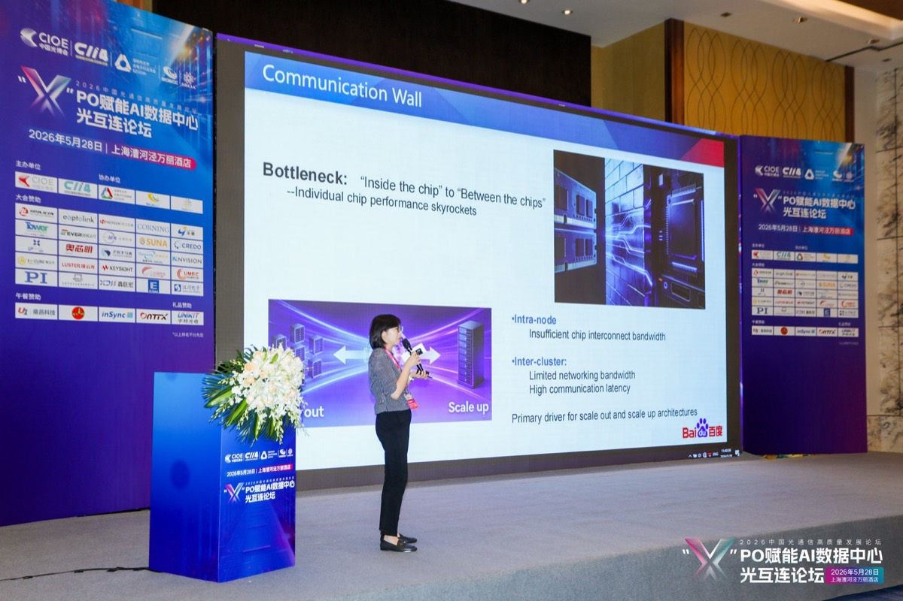
- Scale-Up 互联（短距 <3m）：GPU 直连，带宽密度与功耗约束极严，催生 NPO/CPO 需求；
- Scale-Across 互联（跨园区 >2km）：800G/1.6T 相干（Coherent）光互联是主要技术路径；
- 规模感知：单个超大规模 AI 集群的光互联接口已达数十万量级，每个接口都是光模块/光芯片的消耗单位。
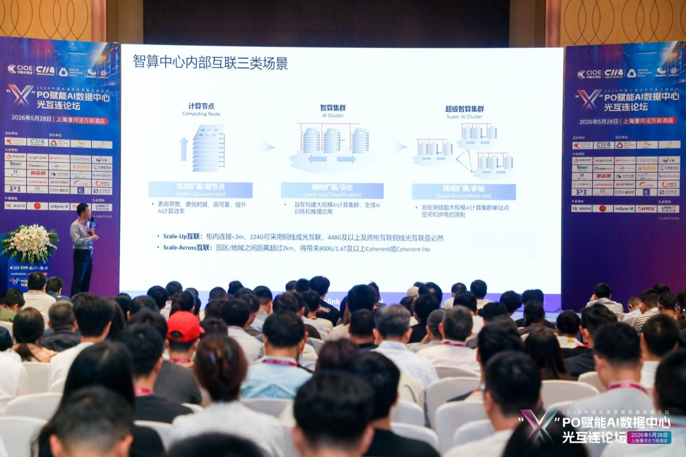
二、需求侧：高增长，也在预期内
2026 年四大云商（亚马逊、谷歌、微软、Meta）的 AI 资本开支合计 $7250 亿， 同比 +77%，且增速仍在加速，谷歌一家近乎翻倍。
关键指标（数据源：LightCounting）：
| 市场指标 | 2024 实际 | 2025 实际 | 2026 预测 | 2031 预测 |
|---|---|---|---|---|
| 以太网光模块市场增速 | +93% | +82% | +65% | 年复合 ≥22% |
| 400G+ 光模块年出货量 | 约 3000 万只 | 超 6000 万只 | 接近 1 亿只 | 1.8 亿只 |
| AI vs Non-AI 光模块占比 | AI 首次超越 | AI 主导 | AI >60% | AI >80% |
| 全球光器件市场规模 | 约 $100 亿 | 约 $180 亿 | 约 $250 亿 | $630—1260 亿 |
| 四大云商 AI 资本开支 | ~$3000 亿 | ~$4500 亿 | $7250 亿 (+77%) | 持续高增长 |
未来五六年，连接 AI 芯片的器件市场要翻几倍（光器件 2031 年是 2025 年的 3.5–7 倍）。
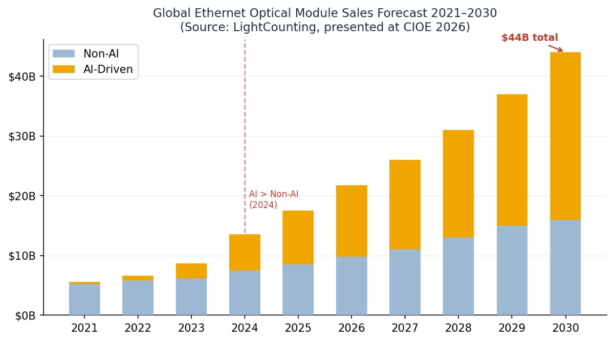
▷ 来源：LightCounting 论坛现场材料
除了出货量，还有一个我觉得更能说明"需求可见度"的指标——云厂商的剩余履约义务（RPO，可粗略理解为在手订单）。 现场给的对比里，谷歌同比 +131% 领跑，几家头部的能见度都创了新高，订单已排到 2027 年。
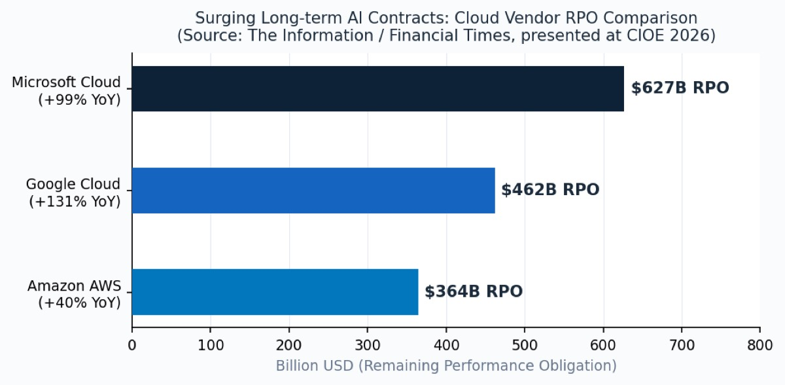
▷ 来源：LightCounting 论坛现场材料
利润会往哪里迁移
产业链价值重构：有的已经发生，有的还没发生，有的也许不会发生。
| 产业链层级 | 价值地位变化 | 方向 |
|---|---|---|
| GPU / ASIC 芯片 | 仍是核心，但"通信墙"制约了价值发挥 | 需配套光互联才能完整发挥 |
| 以太网交换机 | Broadcom Tomahawk 6 已集成 102.4T，依赖光互联扩展集群 | 与光互联深度绑定 |
| 传统光模块（DPO） | 仍是主流但将逐步被 LPO/NPO 替代，毛利率承压 | ⚠ 转型窗口有限 |
| 光引擎 / NPO 模组 | 从配件升级为核心基础设施，议价能力提升 | 核心受益环节 |
| SiPh 芯片（EIC+PIC） | 所有 xPO 路线的共同底层，国产替代空间大 | 平台型机会 |
| 先进封装（CPO/CoPoS） | 未来技术终态的门票，壁垒极高 | 2027 年后价值释放 |
| 测试与测量 | 与光模块市场等比放量，刚需属性强 | 持续受益 |
| 光纤材料（MCF/HCF） | 高密度 MCF 与空芯光纤进入商业化拐点 | 新兴机会 |
三、分歧在路线：NPO、CPO、XPO
真正还没定论、也最值得花时间理解的，是技术路线。光模块从"分离"走向"集成"是共识， 但具体怎么走、谁先走通，分歧很大。现场反复出现三个缩写：NPO、CPO、XPO。
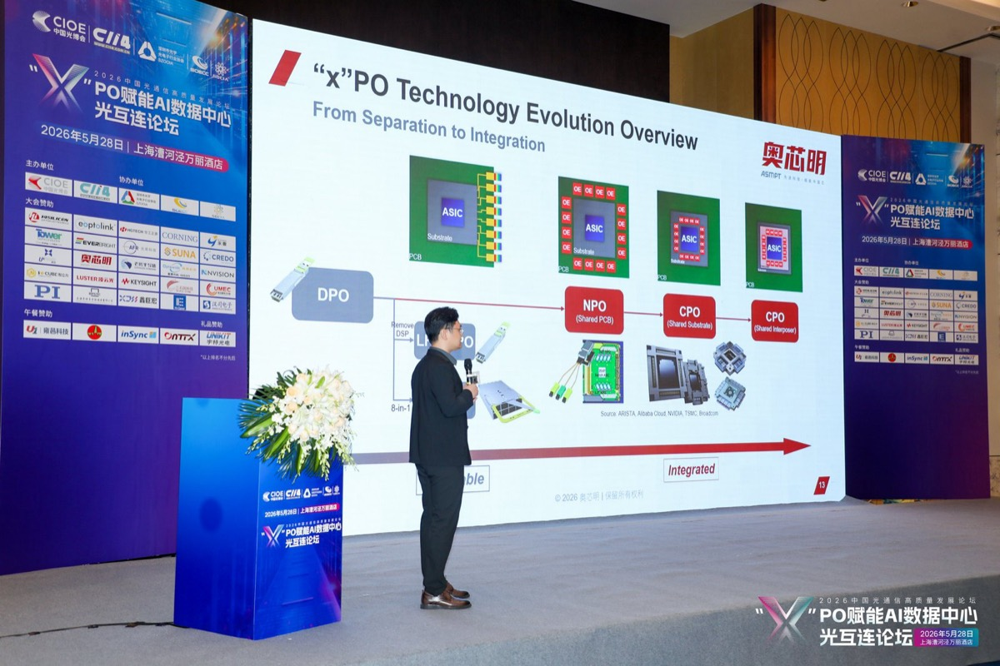
- LPO / NPO——把光引擎往交换芯片旁边挪一挪，省电、好量产，现在就能落地；
- CPO（共封装）——光引擎和芯片封装在一起，密度最高、最省电，但最难做、坏了不能换。公认的"技术终态"，量产一推再推；
- XPO——液冷可插拔的折中路线，还在做 MSA 标准。
论坛给的各形态进展与投资窗口（来源：奥芯明演讲）：
| 形态 | 当前进展 | 投资窗口 | 关键催化剂 |
|---|---|---|---|
| LPO（去 DSP 线性直驱） | 400G 批量出货，800G 推进中 | 当前（量产期） | 800G AI 集群扩建，低功耗刚需 |
| NPO 3.2T | 产业链验证完成，年底小批量 | 2026—2027（量产兑现） | 阿里云等年底启动商用 |
| NPO 6.4T | 系统验证阶段 | 2026—2027（研发布局） | 阿里云 6.4T UPO 年底 Beta |
| XPO（液冷可插拔 12.8T） | MSA 标准化推进，20+ 成员 | 2026—2027（标准确立） | XPO MSA 最终版发布 |
| CPO | 小批量实验室验证 | 2027—2028（早期量产） | CoPoS 良率突破，OCI-MSA 收敛 |
一些技术对比，直接放图
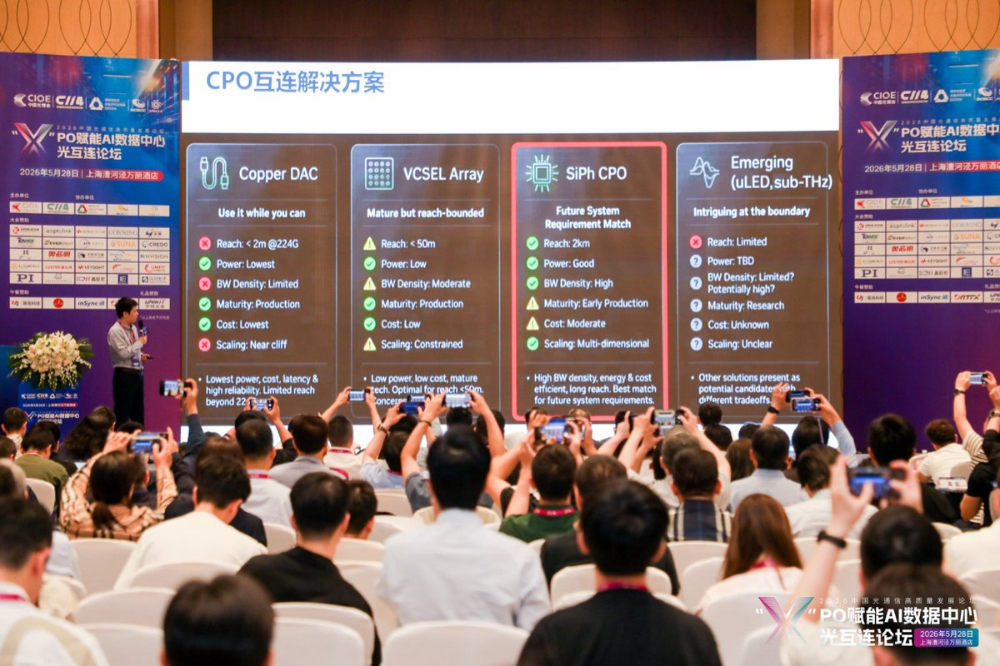
▷ 来源：论坛现场演示材料
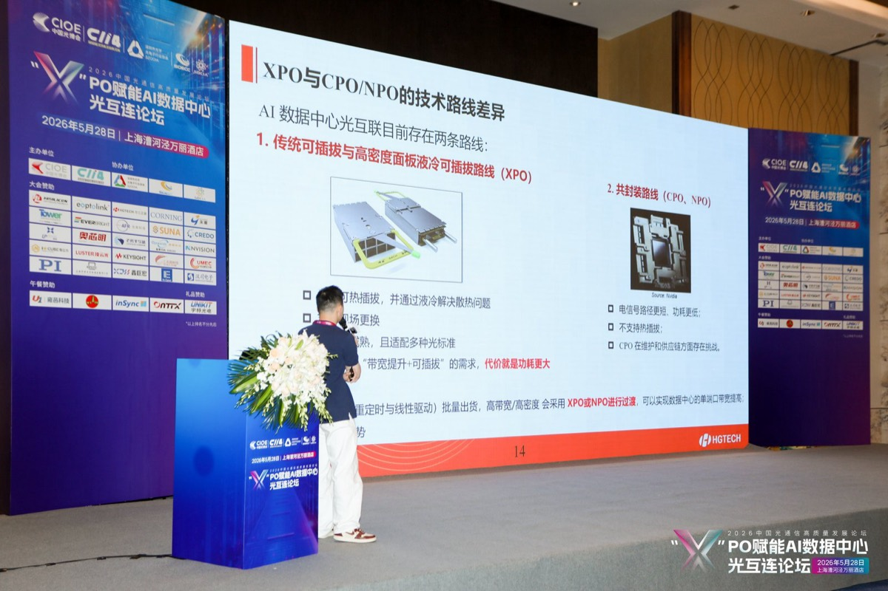
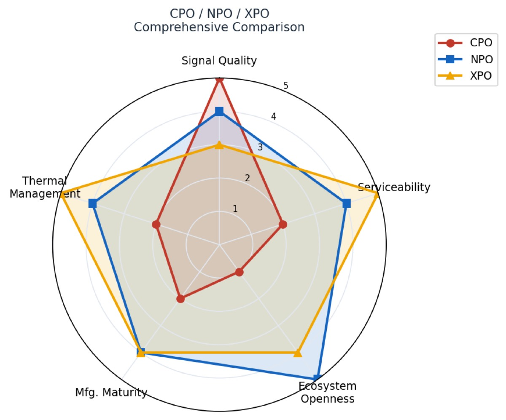
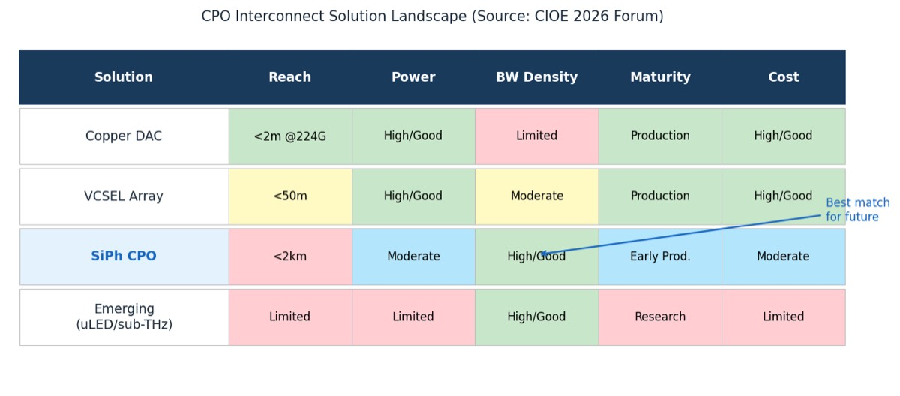
把雷达图的几个维度落成表：
| 维度 | XPO | NPO | CPO |
|---|---|---|---|
| 信号完整性 | 线性，TP2 不确定 | 线性，224G 已 TP2 出厂保证 | 线性，最优，TP2 保证 |
| 可维护性 | 最优，现场可更换 | 可更换，不可现场维护 | 不可更换 |
| 密度 | 足够 | 足够 | 最高，需定制光电协同 |
| 技术成熟度 | 标准化推进中 | 最成熟，最快量产 | 未达批量部署条件 |
| 生态开放性 | 开放解耦 | 开放解耦 | 封闭，厂商绑定 |
我自己归纳成一句：NPO 是当前最现实的选择，CPO 是迟早会到、但还没到的答案。
AI 算力革命正推动数据中心光互联迈入全新时代：Scale-Out 坚守可插拔生态，以 OSFP 持续迭代； Scale-Up 转向近封装/共封装，NPO 成为当前规模化的最优解，CPO 锚定长期技术方向。
—— 阿里云光网络架构师 陈钦 · 论坛现场
NPO 的标准也来了，中国信通院联合华为、腾讯、中国移动， 于 5 月 21 日向 OIF 提交了 12.8T 共封装模块标准草案，并通过了 Q2 技术委员会审议。
时间线：简单梳理
| 时间 | 事件 | 含义 |
|---|---|---|
| 2025 年底（已发生） | 阿里云点亮全球首个 OIF 标准 3.2T NPO 系统 | 技术可行性验证完成 |
| 2026.5.21（已发生） | 信通院联合华为/腾讯/中移动提交 NPO 12.8T 国际标准草案并通过审议 | 中国产业链获国际标准话语权 |
| 2026 Q3—Q4 | XPO MSA 最终标准发布；Arista 首批 XPO 配套交换机出货 | XPO 进入认证期 |
| 2026 年底 | 3.2T NPO 小批量商用启动（阿里云等） | ⭐ 供应链进入批量出货期 |
| 2027 年 | 3.2T NPO 规模化；6.4T 首批商用；CPO 良率冲刺 | NPO 产值规模化 |
| 2028 年+ | 空芯光纤进集群；uLED/sub-THz 样品出现 | 下一代技术机会浮现 |
2026 年底到 2027 年，是 NPO 从验证走向出货的兑现期，也是这条线上最清晰的节点。
四、几个环节，单独记一下
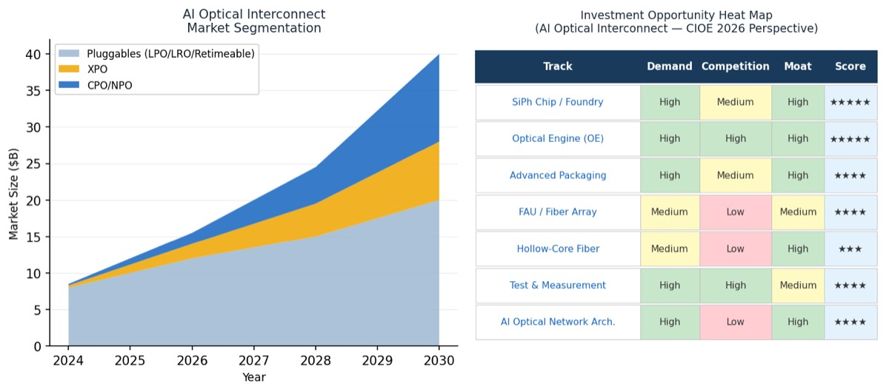
▷ 来源：论坛现场评级材料
硅光：所有路线的共同底层
最值得标记的一点是：不管押 NPO、CPO 还是 XPO，底下都是硅光（Silicon Photonics）。 需求侧（百度、阿里云）和供给侧（长光华芯、CUMEC）在这点上说法一致：全球 SiPh 芯片市场 2026 年约 $30 亿、2030 年超 $100 亿， 国产化率目前不到 10%。
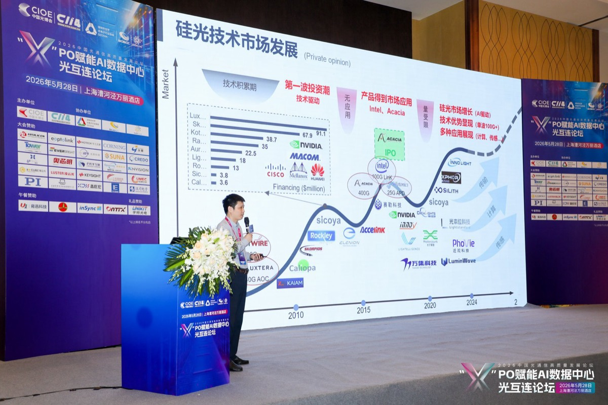
光引擎 / NPO 模组：当前确定性最强的一环
3.2T NPO 模组单价预计 $5000—8000，2027 年全球 NPO 年市场规模预计超 $50 亿。
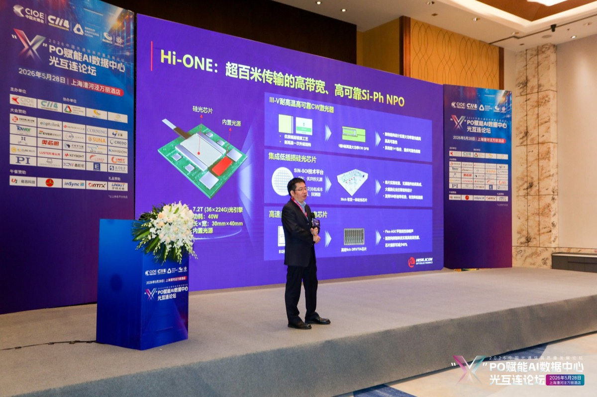
NPO 在 ≤224G/L 速率下性能储备充足，更容易规模化落地。2025 年底已点亮全球首个基于 OIF 标准的 3.2T NPO 系统，2026 年底小批量商用，2027 年规模化部署。
—— 阿里云陈钦 · 论坛现场
FAU：典型的"卖铲子"位置
FAU（光纤阵列单元）是光路进出封装的物理接口，不管哪条技术路线赢都得用——典型的卖铲子逻辑。 现场提到全球能量产 2D FAU 的厂商不到 5 家，稀缺性是它的护城河；国际上仅 US Conec 等少数厂商。
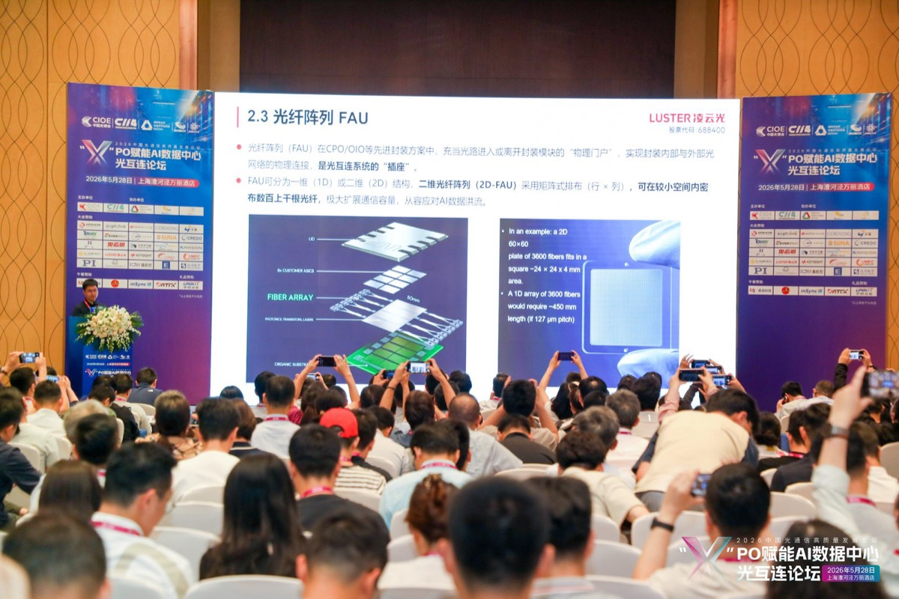
先进封装（CoPoS）：终态的门票，但要等
CPO 真正落地绕不开先进封装。CPO 封装市场 2028 年预计 $20 亿、2030 年超 $50 亿； 三大技术门槛——CoPoS 精密对准、TGV 基板、光电共封热管理——缺一不可。其中 TGV 基板国内几乎空白。
空芯光纤：远期，但拐点在靠近
两年内单价降了 500 多倍， 单次拉丝长度从不到 1 公里做到 90 公里，损耗压到 0.1 dB/km 以下，传输时延比实芯光纤省超 30%， 非线性约降低 1000 倍。
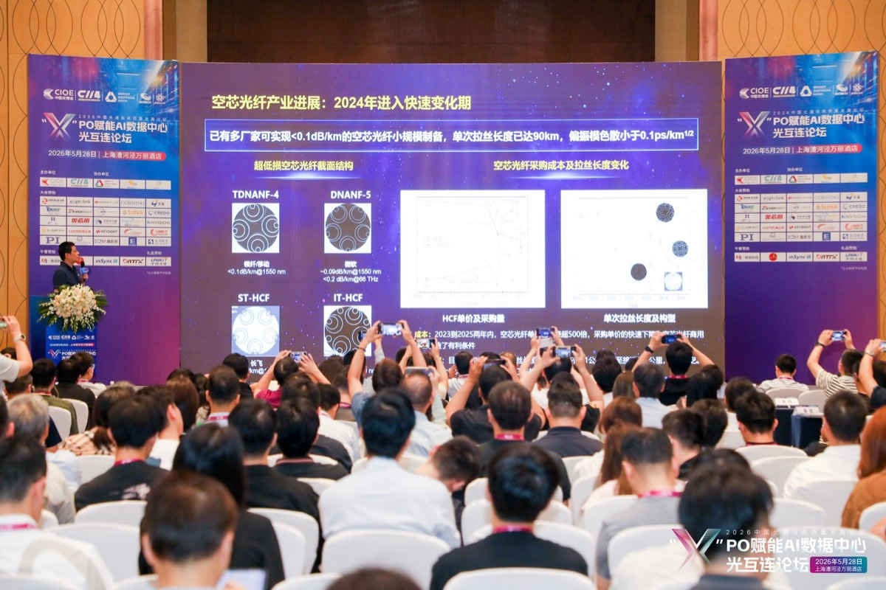
| 关键参数 | 当前最优 | vs 实芯光纤 |
|---|---|---|
| 传输时延 | 节省超 30% | 传播速度约 1.5 倍 |
| 传输损耗 | <0.1 dB/km | 已达可用水平 |
| 非线性系数 | 大幅降低 | 约降低 1000 倍 |
| 单次拉丝长度 | 90 km（2026） | 2022 年时不足 1km |
测试与测量：被忽略的刚需
速率每升一代（400G→800G→1.6T），测试难度和成本翻倍，且这一步省不掉。 T&M 市场约为光模块市场的 5—8%，2031 年可达 $40—50 亿；高端仪器仍由是德、Viavi、EXFO 主导， 国内替代率不到 5%。
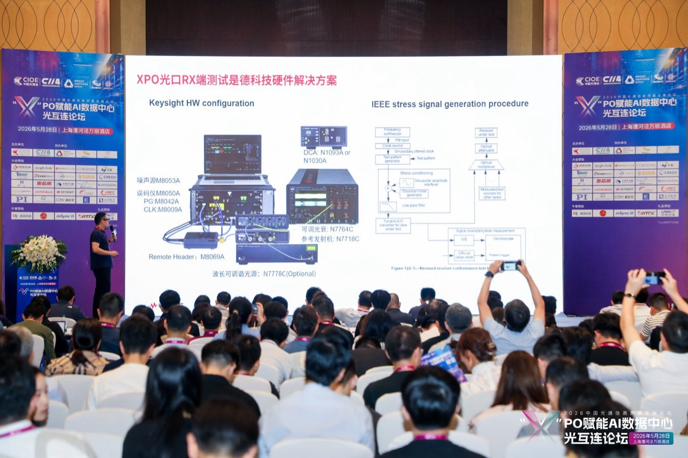
五、一些总结
- 趋势（需求）确定，路径（路线）不确定——风险在确定中累积，机会在不确定中闪现，不同于市场的预期越来越少，窗口也越来越小了。
- NPO 是当前确定性最强的环节，2026 年底至 2027 年是兑现期；CPO 是方向，但 2027 年前难真正落地。
- 硅光是所有路线的共同底层，FAU 是"卖铲子"位置。
- "做 AI 光模块"和"做光模块"是两回事；不升级光引擎能力的传统厂商，接下去要和立讯鸿海比产线。
论坛收尾时，CIOE 的杨耕硕在致辞里有句话，我抄下来作为这篇的注脚：
光互连已经从一项支撑性技术，跃升为决定算力效能、功耗与成本的核心瓶颈。
—— CIOE 副主席兼秘书长 杨耕硕 · 开幕致辞
就先记到这。上面的结论会不会被打脸，过一两年回来对照就知道了。